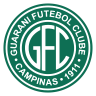

Santos Futebol Clube
Um dos maiores clubes do mundo, eleito o melhor time do mundo no século XX, a história, os ídolos, os títulos, a torcida e a base do Santos Futebol Clube.
Curiosidades Bônus
Try scrolling the rest of the page to see this option in action.
Try scrolling the rest of the page to see this option in action.
Try scrolling the rest of the page to see this option in action.
Alguns jogos passados
Guarani  1 X 1  Santos
Santos
Santos
Santos 0 X 0  Amazonas
Amazonas
0 X 0
Santos 2 X 2  Ponte Preta
Ponte Preta
2 X 2
Brusque  0 X 1 Santos
0 X 1 Santos
Santos
História
O Santos Futebol Clube, fundado em 1912 na cidade de Santos, São Paulo, é uma das equipes mais renomadas do futebol brasileiro e mundial. Conhecido por sua filosofia de jogo ofensivo e pela formação de talentos, o clube alcançou o ápice na década de 1960, liderado por Pelé, conquistando títulos como a Copa Libertadores e o Mundial Interclubes. Ao longo de sua história, o Santos acumulou um total de 23 títulos do Campeonato Paulista e continuou a ser uma força competitiva, inspirando gerações de fãs e influenciando o cenário esportivo global com seu legado de sucesso e excelência.
Infelizmente, hoje em dia o Santos Futebol CLube está jogando a Série B do campeonato brasileiro, o que é uma coisa assustadora que foi causada pelas ultimas más gestões do Santos, pois, em 2019, o Santos estava em segundo lugar no Brasileirão, com 74 pontos, perdendo o título para o Flamengo de Jorge Jesus, uma das melhores equipes da história do futebol brasileiro, um time que teve a maior pontuação da história do Brasileirão, o melhor ataque, tudo. Logo após todo esse ocorrido em 2019, o Santos foi pra temporada seguinte com um nível alto de esperança, e, com essa esperança elevada, conseguiu chegar na final da Libertadores, contra o Palmeiras, o seu rival local, mas, infelizmente, acabou perdendo a final para o Palmeiras por 1 a 0. E assim foi a decadência do Santos Futebol CLube, o time que saiu de vice campeão continental, para time de segunda divisão. Se quiser saber mais sobre a história do Santos Futebol clube, clique no botão abaixo!
HistóriaCuriosidades
O Santos Futebol Clube é um time gigantesco, e assim como cada clube tem suas pequenas peculiaridades, o Santos também tem as suas!! um time que já teve diversos jogadores históricos como Pelé, Neymar, Robinho, Elano, Diego, Zito e muitos outros, também tem muitas diversas curiosidades na sua história, sejam elas boas, ou ruins... então, nessa página abaixo iremos falar um pouco sobre as curiosidades do Santos, boas ou ruins, divertidas ou tristes, entre muitas outras. Mostraremos um pouco sobre o impacto cultural do Santos Futebol Clube, sobre muitas outras coisas.

Se quiser saber sobre as curiosidades do Santos Futebol clube, clique no botão abaixo!
CuriosidadesTítulos
O Santos Futebol Clube possui uma trajetória gloriosa de conquistas que abrange tanto o cenário nacional quanto internacional. Destacam-se os feitos na Copa Libertadores da América, onde o clube ergueu o troféu em duas ocasiões, em 1962 e 1963, consolidando sua reputação como um dos melhores da América do Sul. Além disso, o Santos conquistou o Mundial Interclubes nestes mesmos anos, elevando seu status global e demonstrando sua capacidade de competir com os melhores do mundo.